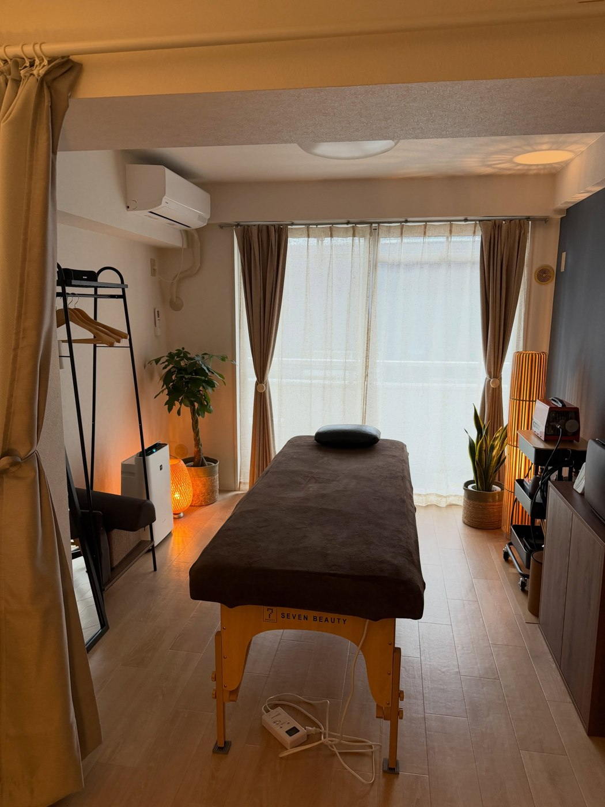

OUR SALON
サロンについて
横浜・桜木町、花咲町の「えっちゃん家」。
窓辺にベッドを一台置いた、もみほぐしと筋膜リリースの個室サロンです。


ひとりで、
ひと息つける部屋。
ベージュのカーテン越しに光が入る施術室。ベッドの横には観葉植物と小さな灯りを置いています。カーテンを閉めると、木の床に暖色の光が広がります。
個室で施術を受けていただけるので、隣のベッドを気にすることもありません。お話ししながらでも、静かに目を閉じたままでも。お好きな過ごし方をお選びください。男女ともにご利用いただけます。
入口から、ベッドまで

扉の内側には木の床が続きます。プラザ桜木町までお越しの際は、ご予約時にお伝えする入室案内をご確認ください。

紺色の壁に沿って小さなカウンターがあります。施術前には、担当者がその日に気になる箇所とご希望を伺います。

お迎えした担当者がそのまま施術に入ります。圧をもう少し弱くしたいときも、遠慮なくお声がけください。
今日は、どんなふうに
ほぐしましょうか。
ご相談は、ご予約のDMからでも承ります。コース名が浮かばないときは「いちばん気になるところ」と「使える時間」をお知らせください。
- 手で、全身をじっくりほぐしたい
- もみほぐしは60・90・120分。お好みの圧を伺いながら、気になる箇所に手を当てていきます。
- 器具を使った筋膜ケアに興味がある
- ジュラシック筋膜リリース®は60・90分。手によるもみほぐしとの組み合わせもご相談いただけます。
- 短い時間で、頭や首まわりを休めたい
- 頭皮筋膜リリースは30分。頭・首・肩まわりに絞ったコースです。

店舗情報・ご予約
コースに迷っている方も、空いている日時を知りたい方も、InstagramのDMでご相談ください。
- サロン名
- えっちゃん家
- 所在地
- 横浜市中区花咲町1丁目12
プラザ桜木町アクセスと地図 - ご予約窓口
- Instagram @etchan_chi
お名前とご希望の日時をお送りください。